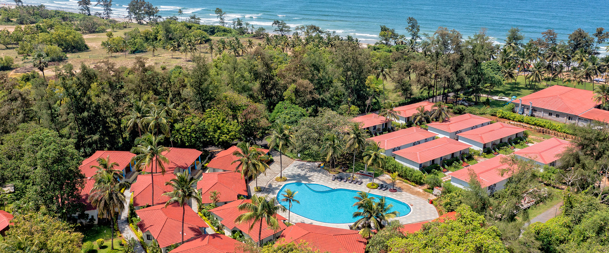
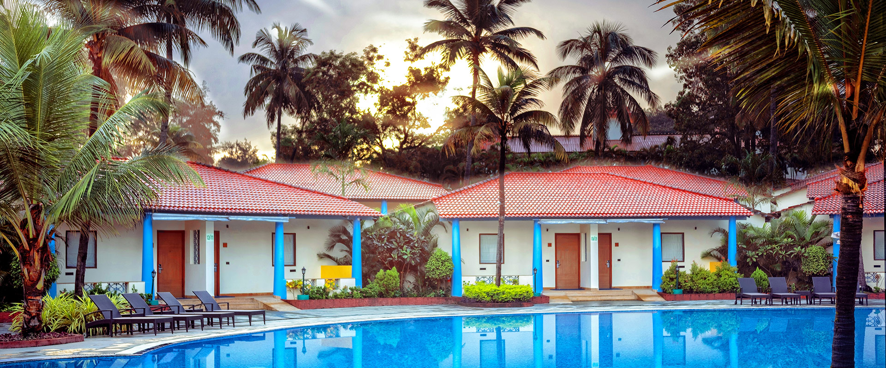
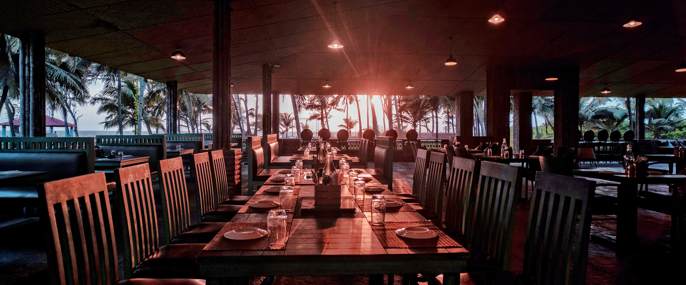
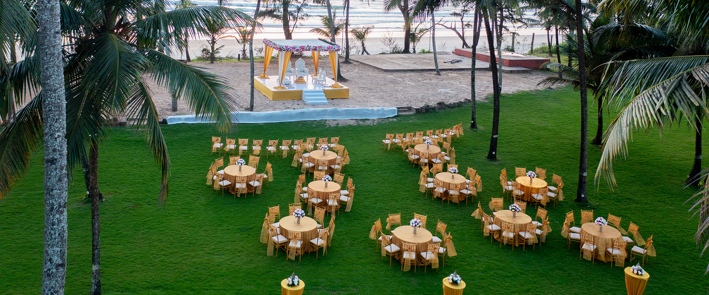

Getting There & Staying
Travel & Accommodations
Everything you need to know about getting to Goa and settling in for the weekend. Hotel accommodations for the wedding nights are taken care of — just focus on getting yourself there.
When to Arrive
🌴 Early Wave — Come Explore
Recommended: Arrive Tue, Nov 24If you'd like to spend a few days exploring Goa with us before the celebrations begin, we highly recommend arriving on the evening of Tuesday, November 24th to make the most of two full days together. That said, come whenever works for you — we'll have plans on Wednesday the 25th and Thursday the 26th that you can join at any point.
Best airport: Fly into Goa International Airport (GOX / Mopa) in North Goa, which gives you easy access to North Goa's beaches and towns before we head south to the venue together.
✦ Main Wave — Join for the Wedding
Arrive Thu–Fri, Nov 26–27If you're joining just for the wedding weekend, aim to arrive by the evening of Thursday, November 26th or the morning of Friday, November 27th — the day the Mehendi and Sangeet begin. The wedding runs through Saturday, November 28th, with checkout on Sunday, November 29th.
Best airport: Fly into Dabolim Airport (GOI) in South Goa — it's the closest airport to The Windflower Resort and significantly more convenient for heading straight to the venue.
Getting to Goa
✈️ Mopa Airport (GOX) — North Goa
Best for early arrivals exploring GoaGoa's newer international airport in the north. A great choice if you're flying in early to explore North Goa's beaches, markets, and Old Goa before joining us at the venue. Getting to South Goa from here takes about 60–90 minutes by car.
✈️ Dabolim Airport (GOI) — South Goa
Closest to the venueGoa's main international airport in the south, well-connected from major Indian cities and international hubs. The Windflower Resort is approximately 25–35 minutes by car — this is the recommended arrival point for most guests coming directly to the wedding.
🚗 Getting to the Venue
Uber operates in Goa and is the easiest way to get from the airport to the resort — just request a ride on arrival as you would at home. Taxis are also available at both airports. We'll share more transport details closer to the date.
Where to Stay
🏨 Accommodation — First Come, First Served
We have a block of rooms reserved at The Windflower Resort for the wedding nights — Friday, November 27th and Saturday, November 28th (checkout Sunday, November 29th). These rooms are covered — guests staying within the block don't need to book or pay. Rooms are allocated on a first-come, first-served basis as RSVPs come in. We'll do our best to accommodate everyone, but if our final guest count exceeds our room block, some guests may need to arrange their own accommodation at nearby hotels — we're happy to help identify options.
Your home for the weekend
The Windflower Resort & Spa
Set on one of South Goa's finest stretches of sand in Varca, The Windflower is a beachside resort surrounded by swaying palms and lush tropical gardens. Here's a taste of where we'll be spending the weekend.




Good to Know
🌤️ Weather in November
November in Goa is glorious — warm, sunny, and low humidity with temperatures around 28–32°C (82–90°F). The monsoon is long over. Pack light, breathable clothes and sunscreen.
💱 Currency & Payments
Indian Rupees (INR) are the local currency. Cards are accepted at most hotels and restaurants. Keep some cash handy for local markets, autos, and tips. ATMs are widely available.
📱 Getting Connected
Indian SIM cards are easy to pick up at the airport with a passport — Airtel and Jio both offer good coverage in South Goa. International roaming works too, though a local SIM is much cheaper for a week's stay.